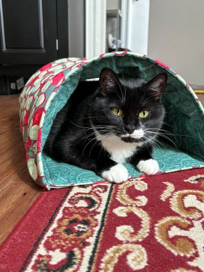
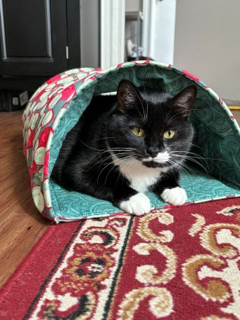
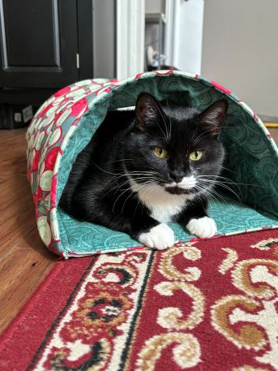

New York City has an abundance of cats on the street. This is a combination of stray or abandoned cats,
feral cats, and community TNR'd cats. However, the city does not have a unified care system for stray
animals. This is where local rescues step in. They provide trap-neuter-return (TNR) services to feral and
community cats, support medical treatment for these animals, and adopt out eligible friendly cats that are
found. Given the volume and lack of city services to support, these rescues cover hyper local areas. If you
find a cat in need, reach out to the rescue in the area the cat was found to help.
If you'd like to learn more about what rescues are doing to get more support from the city, check out the
following:
